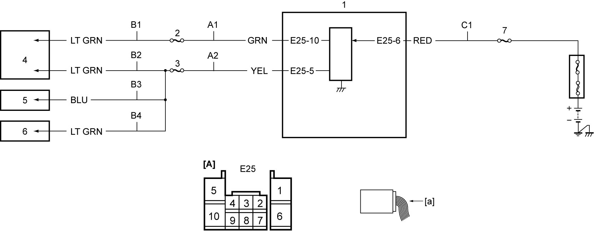

10I
| DTC P133A / P133B |
DTC Detecting Condition and Trouble Area
| DTC detecting condition | Trouble area |
|---|---|
|
P133A: Internal DC/DC Converter Voltage Low Output voltage of DC/DC converter integrated in ENG A-STOP control module is lower than specified value for specified time continuously. |
•ENG A-STOP control module
•Internal DC/DC converter output circuit •Internal DC/DC converter power supply circuit |
|
P133B: Internal DC/DC Converter Voltage High Output voltage of DC/DC converter integrated in ENG A-STOP control module is higher than specified value for specified time continuously. |
Circuit Diagram

 "Expand image")
| [A]: | ENG A-STOP control module connector (View: [a]) | B3: | Combination meter power supply circuit | 3. | “RADIO2” fuse |
| A1: | Internal DC/DC converter output circuit 1 | B4: | Auto A/C panel power supply circuit | 4. | Audio unit / navigation (if equipped) |
| A2: | Internal DC/DC converter output circuit 2 | C1: | Internal DC/DC converter power supply circuit | 5. | Combination meter |
| B1: | Audio unit / navigation power supply circuit 1 | 1. | ENG A-STOP control module | 6. | Auto A/C panel (auto A/C model) |
| B2: | Audio unit / navigation power supply circuit 2 | 2. | “ACC3” fuse | 7. | “DCDC” fuse |
DTC Confirmation Procedure
If you do not select a suitable route and take proper precautions when performing a road test, an accident can occur.
•Select a level road with no traffic to minimize the risk of accident.
•Perform the test extremely carefully.
•Perform the road test with 2 persons, a driver and a tester.
•Perform the test extremely carefully.
•Perform the road test with 2 persons, a driver and a tester.
M/T model
1)Warm up engine to normal operating temperature.
2)Drive vehicle at more than 10 km/h (6 mile/h).
3)Stop vehicle and shift gear to “Neutral”.
4)Release clutch pedal.
5)Depress clutch pedal.
6)Set ignition “OFF”.
7)Repeat Step 2) – 5) once.
A/T model / Twin clutch system model
1)Warm up engine to normal operating temperature.
2)Drive vehicle at more than 10 km/h (6 mile/h).
3)Stop vehicle.
4)Release brake pedal.
5)Set ignition “OFF”.
6)Repeat Step 2) – 4) once.
DTC Troubleshooting
NOTE:
Before performing troubleshooting, remove aftermarket devices such as non-genuine devices, optional parts, audio, etc., if connected to the line(s) via “ACC3” and/or “RADIO2” fuse(s). Influence from these devices may cause this DTC to be detected during diagnosis.
| Step | Action | Yes | No |
|---|---|---|---|
| 1 |
Fuse check
1)Check that ignition is “OFF”.
2)Check “DCDC” fuse.
Is check result OK?
|
Go to Step 2.
|
Replace fuse and check for short circuit to ground.
|
| 2 |
Internal DC/DC converter power supply circuit check
1)Check that ignition is “OFF”.
2)Disconnect “E25” connector.
3)Check for proper terminal connection to “E25” connector.
4)If connections are OK, check that voltage between “C1” circuit and ground is battery voltage.
Is check result OK?
|
Go to Step 3.
|
Repair or replace defective wire harness.
|
| 3 |
Fuse check
1)Check that ignition is “OFF”.
2)Check “ACC3” fuse and “RADIO2” fuse.
Is check result OK?
|
Go to Step 4.
|
Replace fuse and check for short circuit to ground.
|
| 4 |
Internal DC/DC converter output circuit check
1)Check that ignition is “OFF”.
2)Check the following points.
•Resistance of “A1” and “A2” circuits: less than 1 Ω
•Resistance between each of “A1” and “A2” circuit and ground: infinity •Resistance between each of “A1” and “A2” circuit terminals and other terminal at “E25” connector: infinity Is check result OK?
|
Go to Step 5.
|
Repair or replace defective wire harness.
|
| 5 |
Power supply circuit check
1)Check that ignition is “OFF”.
2)Disconnect audio unit / navigation, combination meter and auto A/C panel connectors.
3)Check for proper terminal connection to audio unit / navigation, combination meter and auto A/C panel connectors.
4)If connections are OK, check the following points.
•Resistance of “B1”, “B2”, “B3” and “B4” circuits: less than 1 Ω
•Resistance between each of “B1”, “B2”, “B3” and “B4” circuit and ground: infinity •Resistance between each of “B1” and “B2” circuit terminals and other terminal at audio unit / navigation connector: infinity •Resistance between “B3” circuit terminal and other terminal at combination meter connector: infinity •Resistance between “B4” circuit terminal and other terminal at auto A/C panel connector: infinity Is check result OK?
|
Replace ENG A-STOP control module and recheck for DTC.
|
Repair or replace defective wire harness.
|